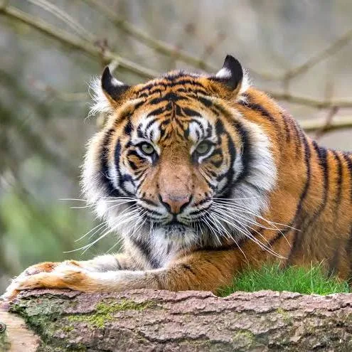

The tiger (Panthera tigris) is a large cat and a member of the genus Panthera native to Asia. It has a powerful, muscular body with a large head and paws, a long tail and orange fur with black, mostly vertical stripes.
The lion (Panthera leo) is a large cat of the genus Panthera, native to Sub-Saharan Africa and India. It has a muscular, broad-chested body; a short, rounded head; round ears; and a dark, hairy tuft at the tip of its tail.
The cat (Felis catus), also referred to as the domestic cat or house cat, is a small domesticated carnivorous mammal. It is the only domesticated species of the family Felidae.

The dog (Canis familiaris or Canis lupus familiaris) is a domesticated descendant of the gray wolf. Also called the domestic dog, it was selectively bred from a population of wolves during the Late Pleistocene by hunter-gatherers.

Snakes are elongated limbless reptiles of the suborder Serpentes (/sɜːrˈpɛntiːz/).[2] Cladistically squamates, snakes are ectothermic, amniote vertebrates covered in overlapping scales much like other members of the group.

The giraffe is a large African hoofed mammal belonging to the genus Giraffa. It is the tallest living terrestrial animal and the largest ruminant on Earth.